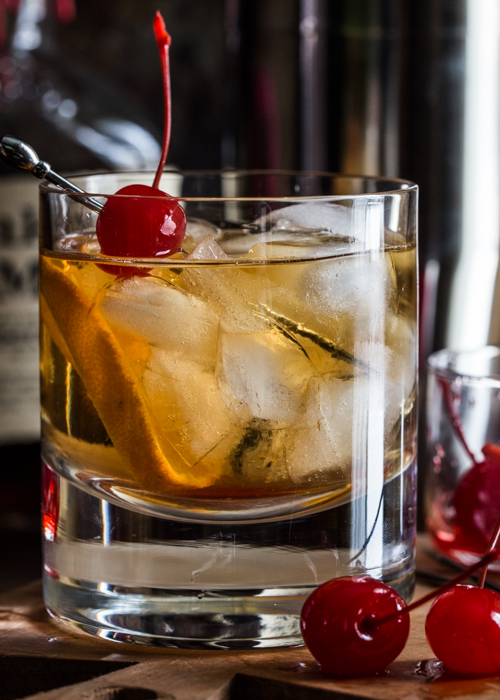

Old Fashioned

Ingredientes:
60 ml de Bourbon ou Whisky de centeio
1 cubo de açúcar (ou 1 colher de chá de açúcar)
2-3 dashes de Angostura Bitters
1 rodela de laranja
1 cereja ao marasquino (opcional)
Gelo
Modo de preparo:
Coloque o cubo de açúcar no fundo de um copo old fashioned ou rocks.
Adicione os dashes de Angostura Bitters diretamente no cubo de açúcar.
Adicione uma rodela de laranja e a cereja ao marasquino no copo.
Com a ajuda de um socador ou colher de bar, pressione e misture o açúcar, bitters, laranja e cereja até dissolver parcialmente
o açúcar e liberar os óleos cítricos.
Adicione alguns cubos de gelo no copo.
Despeje o bourbon ou uísque de centeio sobre o gelo.
Mexa delicadamente o coquetel por cerca de 20 segundos para resfriar e misturar os ingredientes.
>
Se desejar, decore com uma rodela de laranja ou uma cereja ao marasquino adicionais.
Sirva e aproveite seu Old Fashioned!
Lembre-se de que o Old Fashioned é um coquetel clássico que permite algumas variações. Por exemplo, você pode substituir o
açúcar branco por xarope de açúcar, ajustar a quantidade de bitters de acordo com o seu gosto pessoal ou adicionar um pouco
de água para diluir o coquetel, se preferir. Aprecie a bebida da maneira que mais lhe agradar!